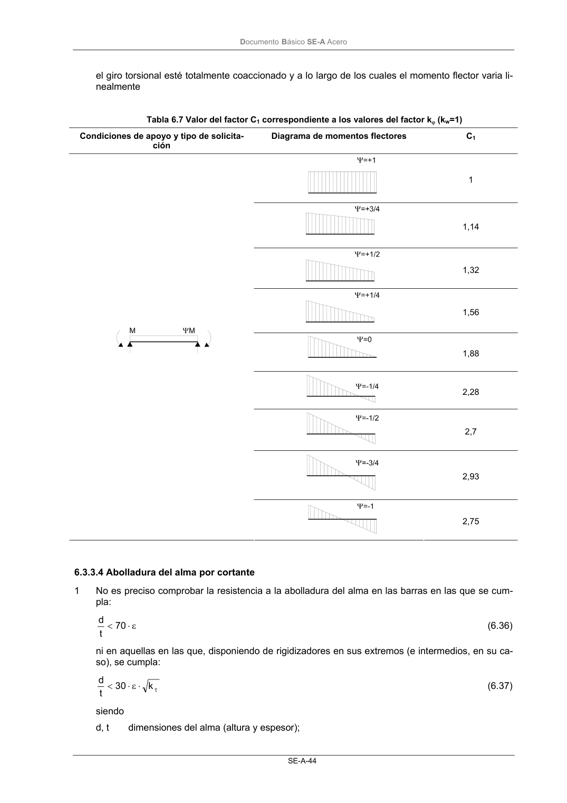
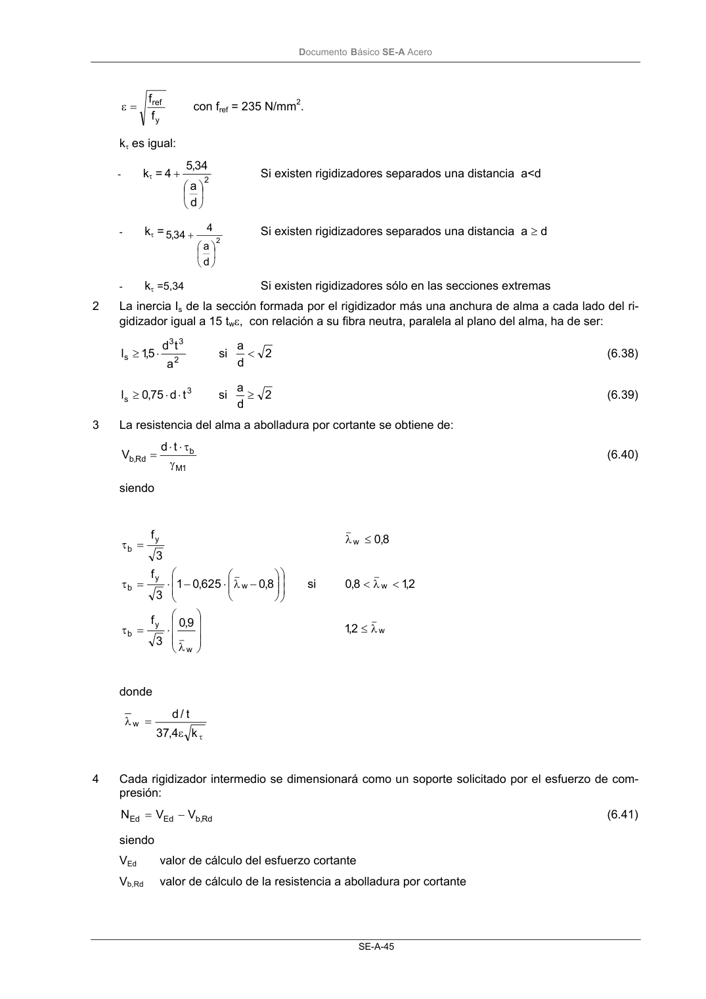
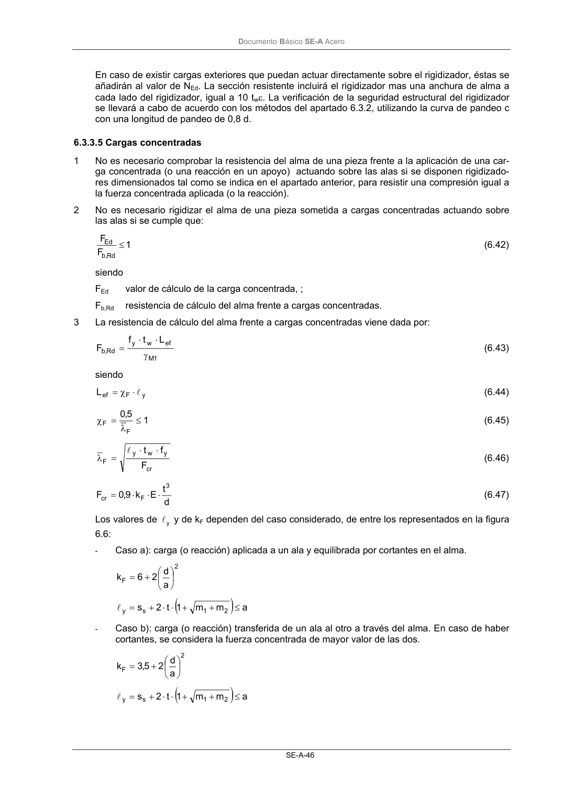

DB-SE-A Acero · edición 2007-10-23 · capa oficial
Documento DB-SE-A-oficial · SHA-256 del PDF 9ed9ea694aabfbda3bfbbef40dfe9223fde05d13c35bc2ba9751e5a96a22a64f
Copia fiel del PDF fuente · Fuente oficial
Ficha de la disposición en la fuente oficial
Formatos: JSON del segmento · Markdown
6.3.3.4 Abolladura del alma por cortante 1 No es preciso comprobar la resistencia a la abolladura del alma en las barras en las que se cum- pla: ε ⋅ < 70 t d (6.36) ni en aquellas en las que, disponiendo de rigidizadores en sus extremos (e intermedios, en su ca- so), se cumpla: τ ⋅ ε ⋅ < k 30 t d (6.37) siendo d, t dimensiones del alma (altura y espesor); DocumentoBásico SE-A Acero SE-A-45 y ref f f = ε con fref = 235 N/mm2. kτ es igual: - kτ = 2 d a 34 ,5 4 + Si existen rigidizadores separados una distancia a<d - kτ = 2 d a 4 34 ,5 + Si existen rigidizadores separados una distancia a ≥ d - kτ=5,34 Si existen rigidizadores sólo en las secciones extremas 2 La inercia Is de la sección formada por el rigidizador más una anchura de alma a cada lado del ri- gidizador igual a 15 twε, con relación a su fibra neutra, paralela al plano del alma, ha de ser: 2 d a si a t d 5,1 l 2 3 3 s < ⋅ ≥ (6.38) 2 d a si t d 75 ,0 l 3 s ≥ ⋅ ⋅ ≥ (6.39) 3 La resistencia del alma a abolladura por cortante se obtiene de: 1 M b Rd , b t d V γ τ ⋅ ⋅ = (6.40) siendo λ ⋅ = τ − λ ⋅ − ⋅ = τ = τ w _ y b w _ y b y b 9,0 3 f 8,0 625 ,0 1 3 f 3 f si w _ w _ w _ 2,1 2,1 8,0 8,0 λ ≤ < λ < ≤ λ donde τ ε = λ k 4 , 37 t/ d w 4 Cada rigidizador intermedio se dimensionará como un soporte solicitado por el esfuerzo de com- presión: Rd , b Ed Ed V V N − = (6.41) siendo VEd valor de cálculo del esfuerzo cortante Vb,Rd valor de cálculo de la resistencia a abolladura por cortante DocumentoBásico SE-A Acero SE-A-46 En caso de existir cargas exteriores que puedan actuar directamente sobre el rigidizador, éstas se añadirán al valor de NEd. La sección resistente incluirá el rigidizador mas una anchura de alma a cada lado del rigidizador, igual a 10 twε. La verificación de la seguridad estructural del rigidizador se llevará a cabo de acuerdo con los métodos del apartado 6.3.2, utilizando la curva de pandeo c con una longitud de pandeo de 0,8 d.


